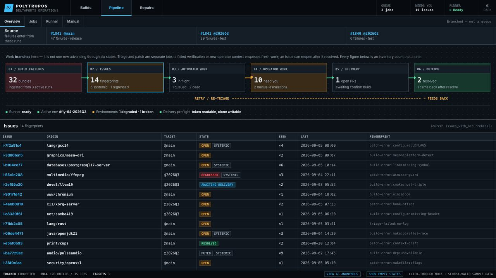
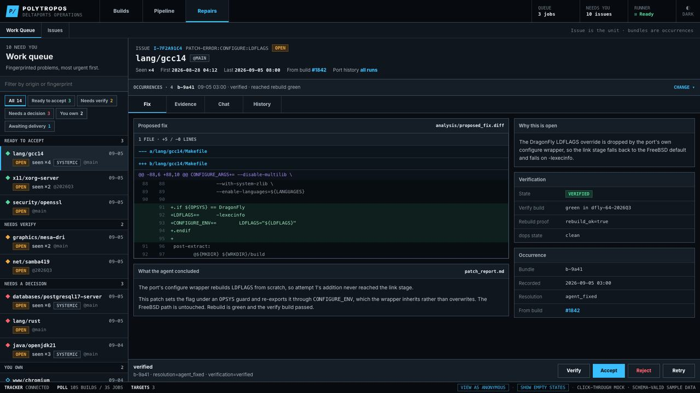
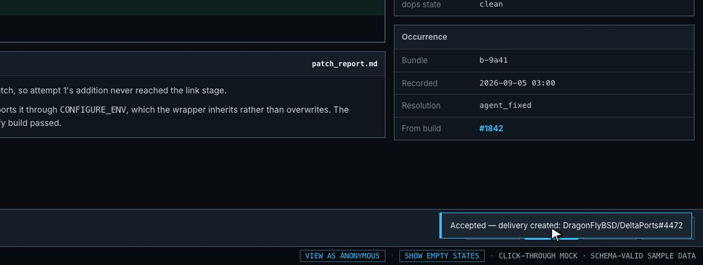

πολύτροπος — much-turned, of many ways
FreeBSD’s ports, made DragonFly’s. Agents find what broke, write the fix, and prove it builds. People decide what ships.
40 seconds · every figure measured from the source trees
The FreeBSD Ports Collection carried 46,190 commits in the past year — 126 a day, across 34,779 ports. It is one of the largest software catalogues in the world, and it moves every single day.
DragonFly BSD is not FreeBSD. Keeping the catalogue building means carrying 5,029 explicit overlays — the exact places where the two systems differ — maintained until now by hand, by a handful of people, against seven hundred upstream committers.
Polytropos composes the trees, builds the result, and repairs what breaks. Agents triage failures, write patches, and verify them with green rebuilds. Every fix arrives as a proposal with its proof attached — and an operator approves what ships. Nothing lands on its own.
Upstream moves 126 times a day, and the answer is a steady stream of fixes instead of heroic catch-up: DragonFly users get the software FreeBSD users have, at the versions they have it, without thinking about it.
Homer’s first word for Odysseus — the man of many turns, resourceful when the way is blocked.
One surface shows the whole pipeline — from build failures through triage to delivery — and every repair arrives with its diff, its reasoning, and its rebuild proof.



The repository ships a local demo that drives the real tracker — real reconcile loop, real state machine, real UI — with only the DragonFly build itself substituted. The suite ships green: 2,085 tests.
# install
git clone https://github.com/DragonFlyBSD/polytropos
cd polytropos
uv venv .venv && uv pip install --python .venv -e ".[tracker,agent,dev]"
# seed the demo and open the tracker
.venv/bin/python demo/seed_demo.py --db /tmp/dports-demo/state.db
.venv/bin/python -m dportsv3 tracker serve --db /tmp/dports-demo/state.db --port 8899Full operator setup, the three input trees, and the design records live in the repository’s docs/.